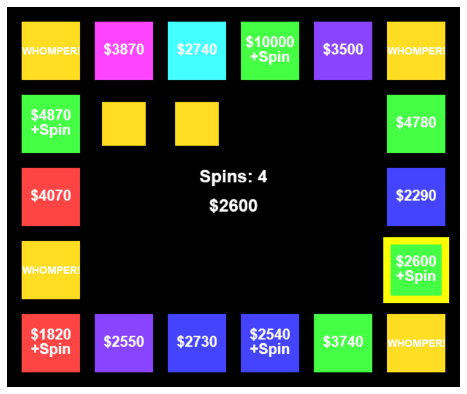

About Me
A while back, I was watching Avengers: Endgame and I heard a quote that really stuck with me: "Everyone fails at who they're supposed to be, Thor. The measure of a person, of a hero, is how well they succeed at being who they are." I found a lot of truth in that statement and I think it reveals a lot about where I am in life.
Instead of focusing on who I was supposed to be, let's talk about who I am. I grew up loving math puzzles and video games. In the past decade, I've thrived in work environments that have presented similar challenges. However, I will always get my greatest feelings of fulfillment from my marriage and parenting a moody cat.
Beyond video games, I later developed a board gaming hobby (more on those below). I enjoy reading all sorts of books and expect I'll never get through my "to read" list. I enjoy watching sports (most often racing and football) and tend to get excited even when checking out obscure ones. I like to play golf on small, inexpensive courses but more recently I've navigated to minigolf instead.
I'm sure I could ramble on for much longer, but I think this is a good starting point. Check out the rest of my website and feel free to get in touch if you want to learn more.
Fun Facts
-
The following games/series have had a strong influence on me:
- Sonic the Hedgehog (3&K, Adventure 2)
- F-Zero (X/GX)
- Skies of Arcadia
- Mass Effect (...not Andromeda)
- Jet Set/Grind Radio
- Earthbound/Mother
- Chrono Trigger
- Elder Scrolls (III/IV/V)
-
My wife and I love board and card games; some of my favorites are:
- Wingspan
- Viticulture
- Ticket to Ride (particularly US, Pennsylvania, and Japan)
- Carcassonne
- Everdell
- Azul
- Love Letter
-
Instruments I Play:
- Piano
- Cello
- Guitar (Electric)
- Ocarina
- Ukulele
- Mandolin
-
I have owned the following game consoles (* = current):
- SEGA
- Game Gear
- Genesis
- Dreamcast (RIP)
- Nintendo
- GameBoy Pocket
- Nintendo 64
- GameBoy Advance
- GameCube
- Super Nintendo (Used)
- Nintendo DS
- Wii
- Nintendo 3DS*
- Wii U
- Switch*
- Microsoft
- Xbox
- Xbox 360
- Xbox One*
FAQ
1) Wait, you have a PhD? Why are you doing web development?
Why not? Yes, I have a PhD, but I've discovered I have a talent for web development and enjoy the creativity involved. And it definitely helps to work at an institute researching the atmosphere!
2) Don't you want to be a professor?
I did previously. But a lot of people I've talked to are unaware that a PhD doesn't guarantee you a job as a professor (especially in recent decades). Here's a simple example that might illuminate why:
Let's say a professor mentors about 10 new PhD students (in 30-ish years) before retiring. Even if the number of academic positions doubled or so with each generation, 80% of those PhD graduates have to find something else to do. The other 20% have to really want it and I admire the commitment and sacrifice they make. But that life turned out not to be for me.
Some of it came down to personal choice. I wanted a career with less travel that would allow my family to choose where to settle down. Like many others, I'm also fortunate enough to have numerous interests.
This article from the New York Times explains the situation fairly well. I also like this one from The Economist.
3) Bitter much about #1 and #2?
Not at all - I just have strong feelings about academia and the stigma around leaving it. I know people who are too afraid to leave and pursue a new career primarily because they don't want to disappoint advisors, family, etc. That's not healthy for anyone.
Game Creator
I enjoy making retro-style games. Many never leave the prototyping phase but I'm happy to share them anyway.In terms of frameworks, I highly recommend Pyxel by Takashi Kitao. Making simple games just using the HTML5 Canvas and JavaScript is also quite good for learning. This tutorial from Mozilla was very helpful.
Pastel Stalactites
Try out the JavaScript
[Source Code] prototype in your browser!
Now also available in Pyxel (shown below)!

You are a rectangular, colorful spelunker who can stretch and shrink on a whim! Pastel stalactites of varying heights will tease, taunt, and tempt you to remain as tall as you can for maximum points. Don't hit your head!
Tempt Your Fortune
Try out the JavaScript [Source Code] prototype in your browser!
A JavaScript prototype of a classic game - can you avoid the Whomper?